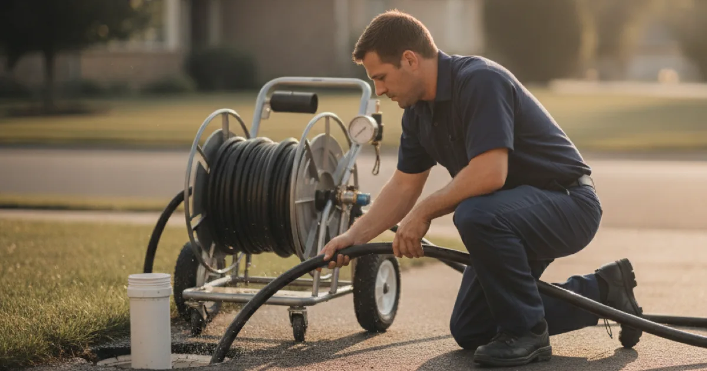

Hydro Jetting in Westchester County, NY
When a drain keeps clogging, hydro jetting cleans the whole pipe instead of just poking through. Dan's Drains uses high-pressure water to scour grease and roots out of your lines.
- Licensed & Insured
- Same-Day Service Available
- Upfront Pricing
- 15+ Years Local Experience

Need a plumber in Westchester County? We can usually help the same day.
What Hydro Jetting Is
Hydro jetting uses a high-pressure stream of water to clean the inside of a pipe all the way around, removing grease, sludge, and roots. Unlike a snake, which clears a path through a clog, jetting cleans the whole pipe wall.
That is why it lasts longer — there is less left behind for the next clog to grab onto.
When Hydro Jetting Is the Right Choice
Jetting shines on grease-caked kitchen lines, root-invaded sewer lines, and drains that keep clogging no matter how often they are snaked. For a simple one-time clog, a snake is often enough.
We usually confirm the situation with a camera look at the line first so jetting is the right call.
Talk to a local Westchester County plumber today.
How Hydro Jetting Works
We insert a jetting hose into the line and run high-pressure water through a specialized nozzle that cleans in all directions as it moves through the pipe. The debris flushes away with the water.
Done properly, it restores the pipe close to its full diameter, which a snake alone cannot do.
Jetting Older Westchester Lines
Many older sewer lines here suffer from root intrusion and years of grease buildup. Jetting is well suited to clearing both, and it buys real time before roots return.
Keeping lines clear protects your home and the wider system, in line with EPA wastewater guidance. We match the pressure to the pipe so it cleans without harm.
When to Call a Pro
Call us when a drain keeps clogging, when grease or roots are the known cause, or when snaking has stopped holding. Jetting is a professional tool that works best with a camera to confirm the pipe can take it.
If jetting reveals a damaged pipe, we can move to a targeted sewer repair.
Frequently Asked Questions
How is hydro jetting different from snaking?
A snake clears a path through a clog; hydro jetting cleans the entire pipe wall with high-pressure water. Jetting removes more and lasts longer, especially with grease and roots.
Is hydro jetting safe for my pipes?
For pipe in sound condition, yes. We often check the line with a camera first and match the pressure to the pipe so it cleans without causing harm.
How often do I need it?
It depends on your line and habits. Jetting a root- or grease-prone line periodically prevents backups. We will suggest an interval based on what we find.
Will jetting clear tree roots?
Yes, it cuts and flushes roots from the line. If roots keep returning, we may recommend a repair to the entry point they are using.
Do you inspect before jetting?
Usually. A camera inspection confirms the cause and that the pipe is sound enough for jetting, so it is the right method.
Ready to book? Reach Dan’s Drains for fast, upfront plumbing help.